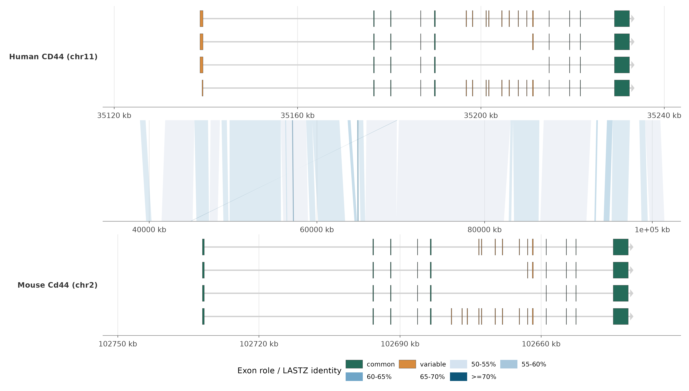

CD44 Splice Variant Alignment Demo
Source:vignettes/cd44-splice-variants-demo.Rmd
cd44-splice-variants-demo.RmdOverview
This tutorial compares selected human CD44 and mouse
Cd44 protein-coding splice variants in one pairwise genomic
view. The example uses two annotation tracks, one middle
geom_nuclink() panel, and genomic DNA alignments produced
with LASTZ from windows that include the gene plus a strand-aware 20 kb
promoter-side flank and 10 kb 3-prime-side flank.
The point is not to draw every transcript. CD44 has many
Ensembl isoforms, so the bundled dataset keeps a small representative
subset: the RefSeq-backed canonical transcript, a short isoform, an
intermediate isoform, and an expanded isoform in each species. Exons are
then classified as:
-
common: present in every selected isoform for that species. -
variable: absent from at least one selected isoform for that species.
The data are bundled under
inst/extdata/cd44_pairwise_ensembl116. Coordinates remain
in their original genome assemblies: human GRCh38 chr11 and
mouse GRCm39 chr2. The mouse Cd44 gene is on
the reverse strand, so the plot below reverses the mouse panel at draw
time while keeping tick labels in original genomic coordinates.
library(ggexon)
demo_dir <- system.file("extdata", "cd44_pairwise_ensembl116", package = "ggexon")
species <- read.delim(file.path(demo_dir, "cd44_species.tsv"), check.names = FALSE)
isoforms <- read.delim(file.path(demo_dir, "cd44_selected_isoforms.tsv"), check.names = FALSE)
isoform_table <- isoforms[, c(
"display_name", "transcript_name", "transcript_id", "exon_count",
"selection_reason"
)]
names(isoform_table) <- c("Species", "Transcript", "Ensembl transcript", "Exons", "Reason")
knitr::kable(isoform_table)| Species | Transcript | Ensembl transcript | Exons | Reason |
|---|---|---|---|---|
| Human | CD44-208 | ENST00000428726 | 18 | RefSeq-backed Ensembl canonical transcript (NM_000610) |
| Human | CD44-201 | ENST00000263398 | 9 | RefSeq-backed shorter CD44 splice isoform (NM_001001391) |
| Human | CD44-210 | ENST00000434472 | 10 | RefSeq-backed intermediate CD44 splice isoform (NM_001202555) |
| Human | CD44-242 | ENST00000904013 | 18 | RefSeq-backed expanded CD44 splice isoform (NM_001440324/NM_001440326) |
| Mouse | Cd44-201 | ENSMUST00000005218 | 19 | RefSeq-backed Ensembl canonical transcript (NM_009851) |
| Mouse | Cd44-203 | ENSMUST00000099673 | 9 | RefSeq-backed shorter Cd44 splice isoform (NM_001039151) |
| Mouse | Cd44-204 | ENSMUST00000111190 | 11 | RefSeq-backed intermediate Cd44 splice isoform (NM_001177787) |
| Mouse | Cd44-208 | ENSMUST00000111198 | 16 | RefSeq-backed expanded Cd44 splice isoform (NM_001177785) |
Pairwise splice-variant plot
The plotting table has one row per exon per selected isoform. The
y-position is assigned by selection_order, which keeps the
four selected isoforms visible instead of overplotting them on one
baseline. Exon fill maps to exon-level splice role, while link fill maps
to binned LASTZ percent identity. The transcript backbone is drawn in
neutral grey with transcript_backbone_fill.
exons <- read.delim(file.path(demo_dir, "cd44_selected_exons.tsv"), check.names = FALSE)
links <- read.delim(file.path(demo_dir, "cd44_nuclinks_lastz.tsv"), check.names = FALSE)
track_levels <- c("human", "link_human_mouse", "mouse")
track_labels <- c(
human = sprintf("Human CD44 (%s)", species$chr[species$species == "human"]),
link_human_mouse = "",
mouse = sprintf("Mouse Cd44 (%s)", species$chr[species$species == "mouse"])
)
exons$track <- factor(exons$track, levels = track_levels)
links$track <- factor(links$track, levels = track_levels)
exons$exon_role <- factor(exons$exon_role, levels = c("common", "variable"))
panel_xlim <- stats::setNames(
lapply(seq_len(nrow(species)), function(i) c(species$window_start[[i]], species$window_end[[i]])),
species$species
)
panel_xlim_chr <- stats::setNames(species$chr, species$species)
identity_levels <- c("50-55%", "55-60%", "60-65%", "65-70%", ">=70%")
links$identity_bin <- factor(links$identity_bin, levels = identity_levels)
splice_palette <- c(common = "#246B5A", variable = "#D88A3D")
identity_palette <- c(
"50-55%" = "#D5E3F0",
"55-60%" = "#A8C7DD",
"60-65%" = "#6FA6C8",
"65-70%" = "#2F7FAA",
">=70%" = "#0E557A"
)
ggexon() +
geom_nuclink(
data = links,
mapping = aes(
tspecies = tspecies,
tchr = tchr,
tstart = tstart,
tend = tend,
qspecies = qspecies,
qchr = qchr,
qstart = qstart,
qend = qend,
strand = strand,
group = group,
fill = identity_bin
),
colour = NA,
alpha = 0.38,
inherit.aes = FALSE
) +
geom_exon(
data = exons,
mapping = aes(
xmin = xmin,
xmax = xmax,
ymin = ymin,
transcripts = transcripts,
strand = strand,
track = track,
type = type,
fill = exon_role
),
exon_height = 0.5,
transcript_backbone_ratio = 0.08,
transcript_arrow_ratio = 0.5,
transcript_arrow_length = 700,
transcript_backbone_fill = "grey82",
transcript_backbone_colour = NA,
colour = "grey25",
linewidth = 0.12
) +
facet_genomics(
vars(track),
scales = "free_x",
ncol = 1,
link_panel_height = 0.32,
link_axis = "none",
link_strip = "blank",
annotation_axis = "bottom",
reverse_x = "mouse",
reverse_x_match_by = "track",
strip.position = "left",
labeller = ggplot2::as_labeller(track_labels),
xlim = panel_xlim,
xlim_chr = panel_xlim_chr
) +
scale_fill_manual(
values = c(splice_palette, identity_palette),
breaks = c("common", "variable", identity_levels),
drop = FALSE,
name = "Exon role / LASTZ identity"
) +
scale_x_continuous(
labels = function(x) paste0(round(x / 1000), " kb"),
expand = ggplot2::expansion(mult = c(0.01, 0.01))
) +
labs(x = "Genomic coordinate (mouse panel reversed)", y = NULL) +
theme_ggexon_track(
base_size = 8,
show_x_axis = TRUE,
show_x_grid = TRUE,
show_legend = TRUE
) +
theme(
panel.spacing.y = grid::unit(0.05, "lines"),
legend.position = "bottom",
legend.key.height = grid::unit(3, "mm"),
legend.key.width = grid::unit(6, "mm"),
plot.margin = margin(6, 8, 6, 6)
) +
ggplot2::guides(
fill = ggplot2::guide_legend(nrow = 2, byrow = TRUE, override.aes = list(alpha = 1))
) +
theme_ggexon_side_strips("left", base_size = 7.5)
Selected human CD44 and mouse Cd44 splice variants with the mouse panel reversed. Exons present in every selected isoform are green; variable splice exons are orange. LASTZ genomic DNA alignment blocks are drawn as nucleotide links and colored by percent-identity range.
What the alignment layer contributes
geom_nuclink() uses a table of target/query genomic
intervals. Here those intervals come from LASTZ alignments of genomic
DNA windows spanning the human and mouse gene loci plus 20 kb
promoter-side and 10 kb 3-prime-side flanks. The demo keeps blocks with
alignment length at least 80 bp and identity at least 50%, so
lower-identity central genomic matches remain visible instead of being
filtered out. The link rows are deliberately kept separate from the exon
annotation rows:
- annotation rows describe selected transcript structures and exon membership;
- link rows describe nucleotide-level genomic alignment blocks and identity ranges;
-
facet_genomics()creates the middle panel and injects the source-panel coordinates thatgeom_nuclink()needs.
homology_candidates <- read.delim(
file.path(demo_dir, "cd44_exon_homology_ranked.tsv"),
check.names = FALSE
)
summary_table <- data.frame(
Metric = c(
"Selected human isoforms",
"Selected mouse isoforms",
"LASTZ link blocks retained",
"Ranked exon-pair candidates",
"Reciprocal-best exon-pair candidates"
),
Value = c(
length(unique(isoforms$transcript_id[isoforms$species == "human"])),
length(unique(isoforms$transcript_id[isoforms$species == "mouse"])),
nrow(links),
nrow(homology_candidates),
sum(homology_candidates$reciprocal_best)
)
)
knitr::kable(summary_table)| Metric | Value |
|---|---|
| Selected human isoforms | 4 |
| Selected mouse isoforms | 4 |
| LASTZ link blocks retained | 25 |
| Ranked exon-pair candidates | 106 |
| Reciprocal-best exon-pair candidates | 6 |
The identity bins in the plot show each retained LASTZ block. To summarize conservation across broad gene parts, the table below clips each retained block to three human-side regions and computes a target-bp-weighted identity. The middle region is the longest consecutive run of variable selected exons.
unique_exons <- read.delim(
file.path(demo_dir, "cd44_selected_unique_exons.tsv"),
check.names = FALSE
)
human_exons <- unique_exons[unique_exons$species == "human", ]
human_exons <- human_exons[order(human_exons$start, human_exons$end), ]
run_id <- cumsum(c(
TRUE,
human_exons$exon_role[-1L] != human_exons$exon_role[-nrow(human_exons)]
))
variable_runs <- do.call(rbind, lapply(split(human_exons, run_id), function(run) {
data.frame(
role = run$exon_role[[1L]],
start = min(run$start),
end = max(run$end),
exon_count = nrow(run),
width = sum(run$end - run$start + 1L)
)
}))
variable_runs <- variable_runs[variable_runs$role == "variable", ]
middle <- variable_runs[order(-variable_runs$exon_count, -variable_runs$width), ][1L, ]
human_gene <- species[species$species == "human", ]
regions <- data.frame(
Region = c("5' side", "variable exon-rich middle", "3' side"),
start = c(human_gene$gene_start, middle$start, middle$end + 1L),
end = c(middle$start - 1L, middle$end, human_gene$gene_end),
check.names = FALSE
)
region_summary <- do.call(rbind, lapply(seq_len(nrow(regions)), function(i) {
region <- regions[i, ]
overlap_bp <- pmax(
0L,
pmin(links$tend, region$end) - pmax(links$tstart, region$start) + 1L
)
keep <- overlap_bp > 0L
data.frame(
Region = region$Region,
`Retained blocks` = sum(keep),
`Human bp covered` = sum(overlap_bp[keep]),
`Weighted identity (%)` = round(
stats::weighted.mean(links$identity[keep], overlap_bp[keep]),
1
),
check.names = FALSE
)
}))
knitr::kable(region_summary)| Region | Retained blocks | Human bp covered | Weighted identity (%) |
|---|---|---|---|
| 5’ side | 15 | 52737 | 55.0 |
| variable exon-rich middle | 3 | 14714 | 55.4 |
| 3’ side | 5 | 16851 | 56.4 |
The same exon-pair candidates can be summarized at the protein level. Peptide fragments are reconstructed from selected transcript CDS codons and assigned to the exon containing each codon start. Protein identity below uses a global peptide alignment; the denominator is aligned amino-acid columns, including gap columns.
protein_identity <- read.delim(
file.path(demo_dir, "cd44_exon_protein_identity.tsv"),
check.names = FALSE
)
protein_identity_table <- protein_identity[
protein_identity$reciprocal_best,
c(
"human_exon_index", "mouse_exon_index",
"human_exon_role", "mouse_exon_role",
"max_link_identity",
"human_peptide_length_aa", "mouse_peptide_length_aa",
"protein_identical_aa", "protein_aligned_aa", "protein_gap_aa",
"protein_identity"
)
]
names(protein_identity_table) <- c(
"Human exon", "Mouse exon",
"Human role", "Mouse role",
"Genomic identity (%)",
"Human peptide aa", "Mouse peptide aa",
"Identical aa", "Aligned aa", "Gap aa",
"Protein identity (%)"
)
knitr::kable(protein_identity_table, row.names = FALSE)| Human exon | Mouse exon | Human role | Mouse role | Genomic identity (%) | Human peptide aa | Mouse peptide aa | Identical aa | Aligned aa | Gap aa | Protein identity (%) |
|---|---|---|---|---|---|---|---|---|---|---|
| 1 | 19 | variable | common | 56.099 | 23 | 27 | 20 | 27 | 4 | 74.1 |
| 3 | 18 | common | common | 54.681 | 55 | 55 | 47 | 55 | 0 | 85.5 |
| 6 | 15 | common | common | 53.681 | 77 | 74 | 42 | 78 | 5 | 53.8 |
| 16 | 5 | variable | variable | 59.102 | 68 | 69 | 32 | 69 | 1 | 46.4 |
| 19 | 2 | common | common | 53.880 | 26 | 26 | 25 | 26 | 0 | 96.2 |
| 20 | 1 | common | common | 59.770 | 67 | 67 | 60 | 67 | 0 | 89.6 |
Reusing the pattern
For splice-variant comparisons, keep the biological feature colors on
the exon rectangles and use neutral styling for schematic structure. In
geom_exon(), that means setting
transcript_backbone_fill and
transcript_backbone_colour. The same idea is available for
geom_exon2() through its intron and terminal-arrow
controls, and for geom_genetag() through
tag_arrow_fill and tag_arrow_colour.
The reproducible data-preparation script is stored in
data-raw/cd44_pairwise_ensembl116/build-cd44-demo.R. It
records the Ensembl release, source URLs, strand-aware flank sizes, UCSC
sequence windows, LASTZ command, selected isoforms, common-exon calls,
and exon-homology candidate tables.